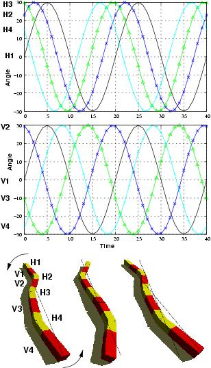

Next: 5 Lateral shift Up: 5 Locomotion capabilities Previous: 3 Rolling gait


Next: 5
Lateral shift Up: 5
Locomotion capabilities
Previous: 3
Rolling gait
The robot can also rotate parallel
to the ground clockwise or anti-clockwise. This is a new gait not
previously mentioned by other researchers. The robot can change its
orientation in the plane. Eight different sinusoidal CPGs are used. A
phase difference of 50 degrees is applied to the horizontal joints
and 120 for the vertical (Fig.
 ).
).
|
 |
|
Figure: Rotating gait. Eight different sinusoidal CPGs are used. A phase difference of 50 degrees is applied to the horizontal joints and 120 for the vertical |